|
|
|
Project 3 Review Questions |

Make a copy of this document before you begin. Place your answers below each question.
Windows Server Log Questions
Report Analysis for Severity
● Did you detect any suspicious changes in severity?
|
Yes – there was an approximately 13% difference in
values. |
Report Analysis for Failed Activities
● Did you detect any suspicious changes in failed activities?
|
No only 1.5% change (status “high” increased by a
count of 2). |
Alert Analysis for Failed Windows Activity
● Did you detect a suspicious volume of failed activity?
|
yes |
● If so, what was the count of events in the hour(s) it occurred?
|
35 events |
● When did it occur?
|
8am March 25th |
● Would your alert be triggered for this activity?
|
Yes, the Alert should be triggered. |
● After reviewing, would you change your threshold from what you previously selected?
|
No, the threshold alerted as expected. |
Alert Analysis for Successful Logins
● Did you detect a suspicious volume of successful logins?
|
Yes |
● If so, what was the count of events in the hour(s) it occurred?
|
196 |
● Who is the primary user logging in?
|
user_j |
● When did it occur?
|
Between 1100 and 1200 on March 25th |
● Would your alert be triggered for this activity?
|
Yes (the alert threshold was set at 20). |
● After reviewing, would you change your threshold from what you previously selected?
|
No. |
Alert Analysis for Deleted Accounts
● Did you detect a suspicious volume of deleted accounts?
|
Overall, no (658 versus 630). However, upon further analysis, there are significant jumps in deleted accounts at suspicious times of day (~1am). |
Dashboard Analysis for Time Chart of Signatures
● Does anything stand out as suspicious?
|
Yes – spikes at specific times. (See screenshots below.) 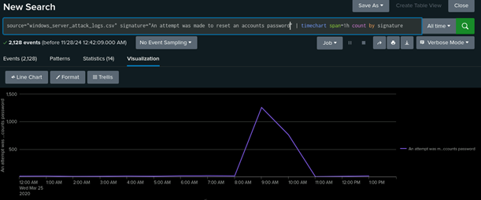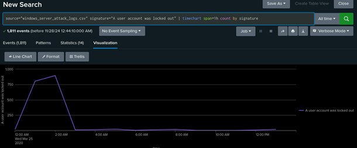 |
● What signatures stand out?
|
“An attempt was made to reset an account password” and “A user account was locked out”. |
● What time did it begin and stop for each signature?
|
“An attempt was made to reset an account password”
began at 8am and stopped at 11am. |
● What is the peak count of the different signatures?
|
“An attempt was made to reset an account password” =
approximately 1,250 |
Dashboard Analysis for Users
● Does anything stand out as suspicious?
|
Yes – spikes at specific times. (See screenshots below.)
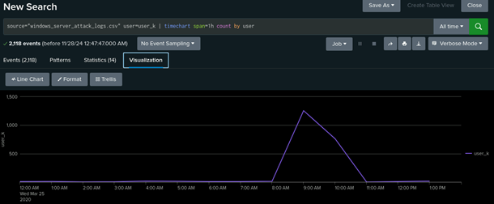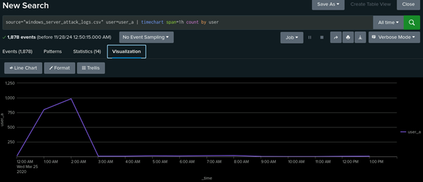 |
● Which users stand out?
|
User_k and user_a stand out. |
● What time did it begin and stop for each user?
|
User_k began at 8am and stopped at 11am. |
● What is the peak count of the different users?
|
User_k = approximately 1,250 User_a = approximately 1,000 |
Dashboard Analysis for Signatures with Bar, Graph, and Pie Charts
● Does anything stand out as suspicious?
|
Yes, the same data from the previous chart still stands out in this visualization. |
● Do the results match your findings in your time chart for signatures?
|
Yes, they do. |
Dashboard Analysis for Users with Bar, Graph, and Pie Charts
● Does anything stand out as suspicious?
|
Yes, the same data from the previous chart still stands out in this visualization. |
● Do the results match your findings in your time chart for users?
|
Yes, they do. |
Dashboard Analysis for Users with Statistical Charts
● What are the advantages and disadvantages of using this report, compared to the other user panels that you created?
|
The advantage is seeing in plain language the exact number of events or occurrences of whichever data point you are currently examining. The disadvantage is you will have a harder time contextualizing how this spike or valley or activity correlates to the data surrounding it. |
Apache Web Server Log Questions
Report Analysis for Methods
● Did you detect any suspicious changes in HTTP methods? If so, which one?
|
Yes there was a 29% decrease in GET and subsequent 29% increase in POST. |
● What is that method used for?
|
POST is used to add or update information to a web server. |
Report Analysis for Referrer Domains
● Did you detect any suspicious changes in referrer domains?
|
A >3% fluctuation does not seem suspicious. |
Report Analysis for HTTP Response Codes
● Did you detect any suspicious changes in HTTP response codes?
|
The amount of 404 codes jumped from 2% to 15%. |
Alert Analysis for International Activity
● Did you detect a suspicious volume of international activity?
|
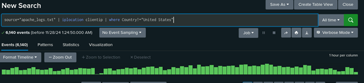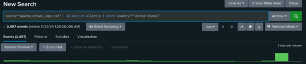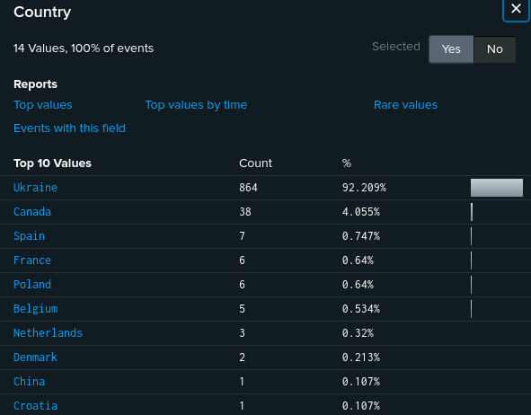 Yes in the Attack log there was a clear spike during the 20th hour. Mostly Perpetrated by Ukraine |
● If so, what was the count of the hour(s) it occurred in?
|
937 events |
● Would your alert be triggered for this activity?
|
It absolutely would. |
● After reviewing, would you change the threshold that you previously selected?
|
No, the threshold worked as intended. |
Alert Analysis for HTTP POST Activity
● Did you detect any suspicious volume of HTTP POST activity?
|
Yes, there was a significant increase in the amount of POST activity during the 20th hour of March 25th. |
● If so, what was the count of the hour(s) it occurred in?
|
1296 events |
● When did it occur?
|
At 805pm on March 25th. |
● After reviewing, would you change the threshold that you previously selected?
|
No, the threshold worked as intended. |
Dashboard Analysis for Time Chart of HTTP Methods
● Does anything stand out as suspicious?
|
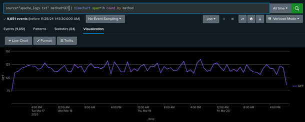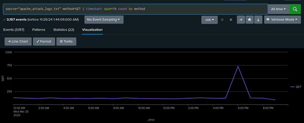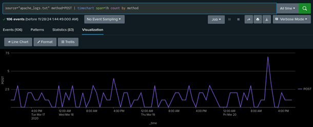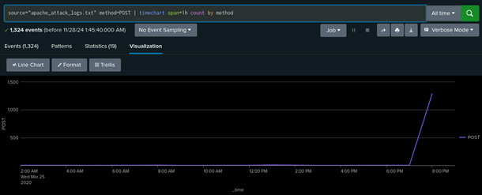 There was suspicious activity beginning on GET at 1700 to 1900 on March 25th and continuing on POST at 1900 to 2000 on March 25th. |
● Which method seems to be used in the attack?
|
It began with GET and moved to POST. |
● At what times did the attack start and stop?
|
GET started at 1700 and stopped at 1900 POST started at 1900 and stopped at 2000 |
● What is the peak count of the top method during the attack?
|
The GET peak was 729 and the POST peak was 1296 |
Dashboard Analysis for Cluster Map
● Does anything stand out as suspicious?
|
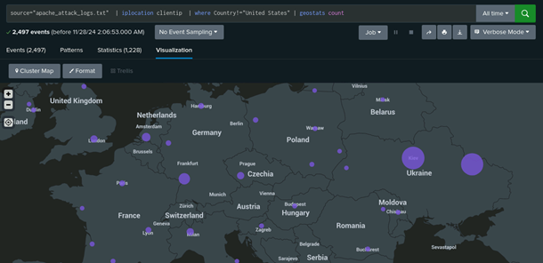 Ukraine has had a spike in activity. |
● Which new location (city, country) on the map has a high volume of activity? (Hint: Zoom in on the map.)
|
The cities of Kiev and Kharkiv in Ukraine |
● What is the count of that city?
|
Kiev had 440 and Kharkiv had 432 |
Dashboard Analysis for URI Data
● Does anything stand out as suspicious?
|
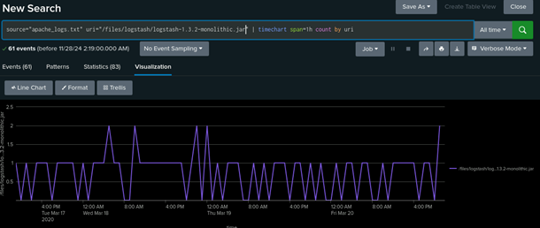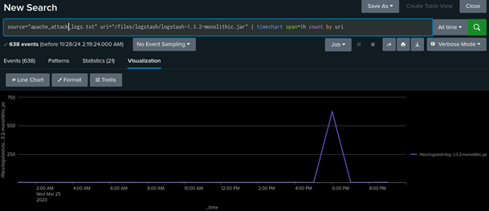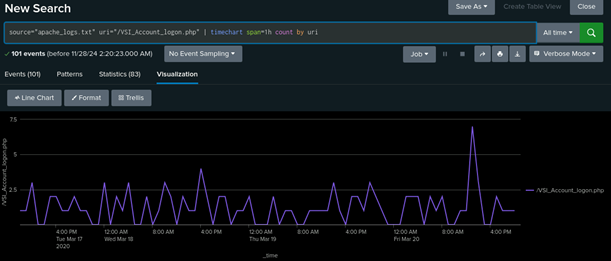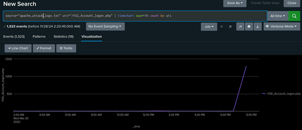 There are obvious spikes in activity for the URIs /files/logstash/logstash-1.3.2_monolithic.jar and /VSI_Account_logon.php from 1700 to 1900 for the former and 1900 to 2000 for the latter. |
● What URI is hit the most?
|
/VSI_Account_logon.php was hit the hardest with 1323 attempts |
● Based on the URI being accessed, what could the attacker potentially be doing?
|
I would bet dollars to dimes the individuals are trying a brute force attack. |
© 2023 edX Boot Camps LLC. Confidential and Proprietary. All Rights Reserved.